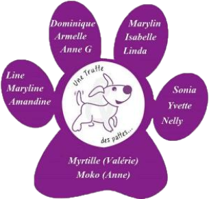

Qui sommes-nous ?

L'amour des animaux, et plus particulièrment des chiens, nous relie pour essayer de leur apporter modestement notre aide.
Une truffe et des pattes est une association de loi 1901 - ref
W563005925.
Notre amour des animaux et plus particulièrment des chiens nous relie pour essayer de leur apporter modestement notre aide.
L'association a été créée par des passionnés partageant les mêmes valeurs : le respect des animaux et des personnes.
Nous souhaitons oeuvrer pour :
le sauvetage et la mise sous protection de chiens de tout type et de toute race se trouvant dans une situation de détresse et/ou de danger (maltraitance, abandon, absence de soin, errance, utilisation à des fins lucratives non autorisée par la loi ou le règlement) ;
la mise à l’adoption des animaux qui sont sauvés et/ou qui lui ont été confiés
l’aide par tout moyen (financier, humain, matériel, psychologique) de particulier à maintenir leur animal dans leur cadre de vie d’origine.
Il est possible que, dans des cas particuliers, d'autres type d'animaux (chats, animaux de ferme, chevaux, rongeurs...) soient aussi protégés et pris en charge par l'association.
Les status :
L'amour des animaux, et plus particulièrment des chiens, nous relie pour essayer de leur apporter modestement notre aide.
Une truffe et des pattes est une association de loi 1901 - ref
W563005925.
Notre amour des animaux et plus particulièrment des chiens nous relie pour essayer de leur apporter modestement notre aide.
L'association a été créée par des passionnés partageant les mêmes valeurs : le respect des animaux et des personnes.
Nous souhaitons oeuvrer pour :
le sauvetage et la mise sous protection de chiens de tout type et de toute race se trouvant dans une situation de détresse et/ou de danger (maltraitance, abandon, absence de soin, errance, utilisation à des fins lucratives non autorisée par la loi ou le règlement) ;
la mise à l’adoption des animaux qui sont sauvés et/ou qui lui ont été confiés
l’aide par tout moyen (financier, humain, matériel, psychologique) de particulier à maintenir leur animal dans leur cadre de vie d’origine.
Il est possible que, dans des cas particuliers, d'autres type d'animaux (chats, animaux de ferme, chevaux, rongeurs...) soient aussi protégés et pris en charge par l'association.
Les statuts :
 Statut truffe et pattes (93.11 Ko)
Statut truffe et pattes (93.11 Ko)